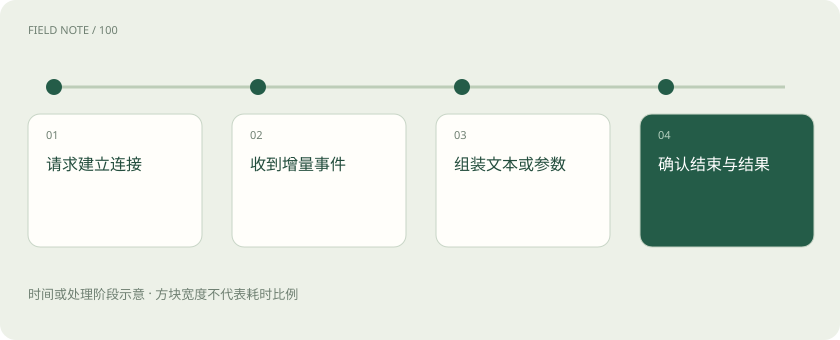

先读哪些知识
先用一个类比理解
餐馆先上一道菜，不代表整桌菜已经齐了；服务员还要说明还有什么、是否缺菜以及整单是否完成。
类比只帮助建立直觉，不等同于技术的完整机制。
一图看懂

SSE 是传输方式，不是模型能力
Server-Sent Events 是服务器向客户端持续发送事件的一种 HTTP 机制。模型服务可以用它传递输出增量，但事件类型和字段由接口协议约定。浏览器看见的一个“字”未必就是一次底层 Token，也未必对应一个完整网络数据包。
工具参数可能尚未拼完整
流式工具调用可能分多次送出工具名称或 JSON 参数片段。应用应按协议组装并验证，不能拿到半个参数对象就执行工具。显示进度、模型生成完成、工具执行完成和业务达成是不同状态，需要分别处理。
断线与重试更难处理
用户已经看见部分回答后连接断开，重新请求可能产生另一段内容。若工具已经执行，整次重跑还可能重复操作。能否续传、是否有请求标识和用量尾事件，取决于具体服务；网关不能假定所有厂商都有相同恢复语义。
用完整生命周期衡量体验
应同时观察首事件、首个可见文本、输出间隔和最终完成状态。服务器发出连接成功的响应头，不等于模型已经产出答案；最后未收到可靠的完成信号，也不应把任务标成成功。取消请求能否停止上游计算同样需要实际验证。
放进真实场景
SCENARIO
助手正在整理采购清单，界面已显示“准备下单”，随后工具调用失败。最终应展示执行失败及下一步，而不是把此前的流式文字当成订单成功凭证。
别踩这个误区
流式输出改善感知等待，但不保证完整任务耗时更短；HTTP 200 也不能代表最后执行成功。
想一想
收到第一段工具参数就可以调用业务接口了吗？
不应。需要等参数完整、通过结构与权限校验，并符合工具调用生命周期。
关联阅读
资料与边界
本文为原创知识讲解。类比和图示经过简化；示例数字不代表实测或报价。整理日期：2026-11-04。文末列出对应技术的原始资料，具体功能与版本支持请以原文为准。